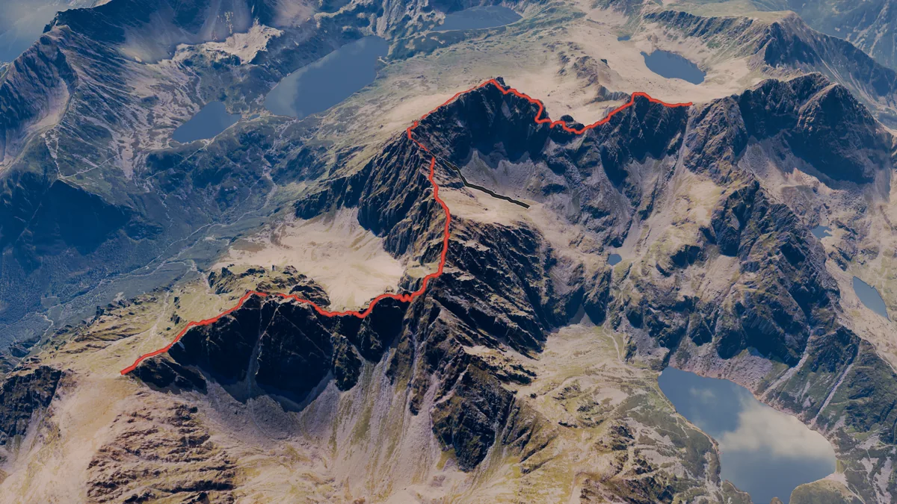
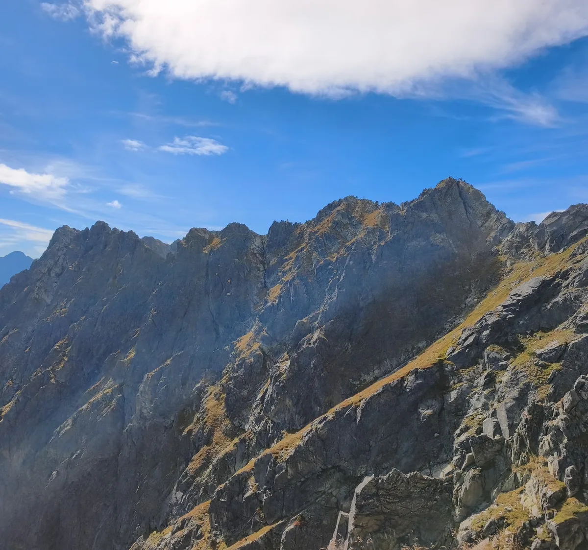
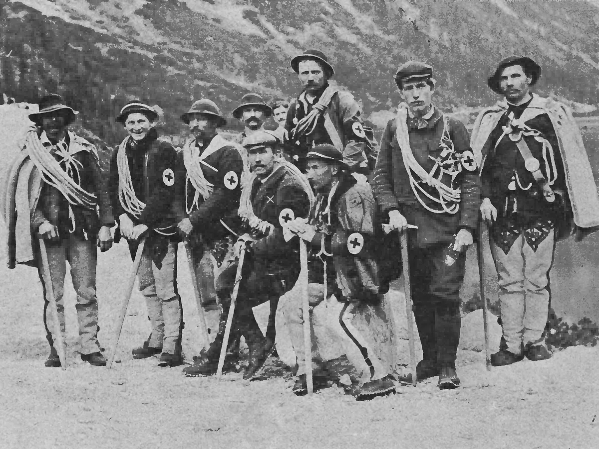

Film „Orla Perć: gdzie dochodziło do śmiertelnych wypadków i dlaczego?” ukaże się wkrótce na kanale W Dobrym Kierunku. Ten tekst zbiera jego dane, miejsca i źródła. To nie jest instrukcja przejścia Orlej Perci, a model 3D nie służy do nawigacji.
Ile osób zginęło na Orlej Perci?
Według Polskiej Agencji Prasowej przez pierwsze 110 lat istnienia szlaku, od 1906 do 2016 roku, na Orlej Perci i na szlakach, które do niej prowadzą, zginęło około 140 osób — mniej więcej co piąta ofiara polskich Tatr.
Dokładniej policzyli to ratownicy TOPR dla lat 2010–2019: w ciągu tej jednej dekady na Orlej Perci, razem ze szlakami dojściowymi, zginęło 21 osób, prawie wszystkie w sześciu miejscach. Najwięcej, pięć, w Żlebie Kulczyńskiego, który nie leży na samej grani. To liczba ofiar, a nie miara ryzyka: raport nie podaje, ile osób przechodzi poszczególne odcinki. Nowszego opracowania wieloletniego z podziałem Orlej Perci na miejsca na stronie statystyk TOPR nie ma (odczyt 18.11.2026).
Sześć miejsc: tabela TOPR
| Miejsce | Ofiary | Co opisują raport i kroniki |
|---|---|---|
| Zawrat | 2 | kronika TOPR od 1936 r.; 6.10.2026 upadek Zawratowym Żlebem |
| Zmarzła Przełęcz Wyżnia | 4 | poślizgnięcia na śniegu i upadki Żlebem Honoratka |
| Kozi Wierch – Kozia Przełęcz | 3 | Kozie Czuby: wypadki przy klamrach i na zlodowaciałym śniegu |
| Żleb Kulczyńskiego | 5 | poślizg na śniegu lub lodzie; wejście w Rysę Zaruskiego |
| Granaty | 3 | wypadki od początku istnienia szlaku; obok Żleb Drège'a |
| Krzyżne – Granacka Przełęcz | 3 | ostatni odcinek grani; dwa wypadki w 2026 r. |
| pozostałe | 1 | — |
| razem | 21 |
Źródło: A. Marasek, A. Marasek, „Wypadki śmiertelne na terenie działania TOPR w latach 2010–2019”, tabela 7. Opisy w trzeciej kolumnie streszczają raport, kroniki TOPR i komunikaty z lat 2025–2026 cytowane niżej.

Zawrat
Tu zaczyna się Orla Perć. W tabeli TOPR za lata 2010–2019: dwie ofiary. Kronika TOPR zna to miejsce od dawna: w sierpniu 1936 roku wycieczka młodzieży nie znała zejścia i nocowała w ścianie Zawratu, a w deszczu i śniegu jeden z chłopców zamarzł.
6 października 2026 roku turystka spadła z Zawratu po stromym, twardym śniegu Zawratowym Żlebem, w stronę Zmarzłego Stawu; ratownicy dotarli do niej śmigłowcem, ale nie udało się jej uratować. TOPR przypominał potem, że w stromym terenie wysokogórskim raczki nie są odpowiednim wyposażeniem.
Zmarzła Przełęcz Wyżnia i Żleb Honoratka
Za Zawratem i Małym Kozim Wierchem leży Zmarzła Przełęcz Wyżnia. W tabeli TOPR: cztery ofiary. Raport opisuje tu poślizgnięcia na śniegu i upadki Żlebem Honoratka, który opada spod przełęczy. Upadków, które nie skończyły się śmiercią, było tu więcej.
Kozia Przełęcz, Kozie Czuby i Kozi Wierch
W tabeli TOPR: trzy ofiary. Kronika TOPR z sierpnia 1953 roku opisuje grupę kilkunastu osób, które rozciągnęły się na całej drodze; brak jednej z nich zauważono dopiero przy zejściu z Koziego Wierchu — odpadła od klamer na Kozich Czubach i zginęła. W grudniu 2025 roku na Kozich Czubach doszło do śmiertelnego wypadku na zlodowaciałym śniegu, a 3 października 2026 roku przy Koziej Przełęczy ciężko ranny został kolejny turysta.
Żleb Kulczyńskiego i Rysa Zaruskiego
W Żlebie Kulczyńskiego w latach 2010–2019 zginęło pięć osób, najwięcej w jednym miejscu na całej Orlej Perci. Nazwę nadał mu Mariusz Zaruski. Raport TOPR opisuje tu dwa mechanizmy: poślizg na śniegu albo lodzie oraz pomyłkę przy podejściu, gdy ktoś zamiast szlakiem wchodzi w Rysę Zaruskiego i spada. Pomyłek jest więcej niż ofiar, a większość kończy się telefonem do TOPR.
W 2007 roku w Rysie namalowano znak z trupią czaszką, jedyny taki w Tatrach. Wcześniej było tam sześć wypadków, w tym jeden śmiertelny. 3 października 2026 roku, około czternastej, Żlebem Kulczyńskiego zsunęły się po śniegu dwie osoby; obie przeżyły.
Granaty i Żleb Drège'a
W tabeli TOPR: trzy ofiary. Wypadki zdarzały się tu od początku istnienia szlaku: w maju 1921 roku trzech mężczyzn w niepodkutych butach zgubiło na Granatach drogę w śniegu; dwóch spadło, trzeciemu udało się wrócić na ścieżkę.
Między Skrajnym a Pośrednim Granatem, na Skrajnej Sieczkowej Przełączce, zaczyna się Żleb Drège'a. Prowadzi w stronę Czarnego Stawu Gąsienicowego. Z grani to szeroka, trawiasta rynna, a na jej końcu staw — wygląda jak skrót. Niżej rynna się zwęża i stromieje, a kończy progiem i przewieszonym kominem. Kto zejdzie przez próg, bez liny nie wróci już tą samą drogą. Nazwę żleb wziął od Jana Drège'a, studenta z Warszawy, który zginął w nim w sierpniu 1911 roku, gdy o zmroku szukał zejścia z Granatów. Żleb nie przestał zabierać ludzi: według kronik TOPR w 1929 roku zginął w nim dwudziestoletni uczeń, a w 1954 roku osiemnastoletnia studentka.

Znakowane zejścia: trzeba je znać przed wyjściem
Z grani Orlej Perci prowadzi w dół kilka znakowanych zejść. Między Skrajnym Granatem a Krzyżnem znakowanego zejścia nie ma. Żleb Drège'a nie jest zejściem z grani. Gdzie są zejścia i jak są trudne, trzeba wiedzieć przed wyjściem — we mgle albo po zmroku jest już za późno, żeby ich szukać. Przebieg grani i zejść opisujemy w odcinku o Orlej Perci.
Od Granackiej Przełęczy do Krzyżnego
Ostatni odcinek grani. W tabeli TOPR: trzy ofiary. 11 sierpnia 2026 roku turystka spadła z grani Małej Buczynowej Turni w stronę Doliny Pańszczycy. 16 listopada 2026 roku, po zmroku, ratownicy TOPR szukali tu zaginionej turystki w wietrze, śniegu i mgle; odnaleźli ją około północy w żlebie pod Granacką Przełęczą, po stronie Doliny Buczynowej, ciężko ranną i mocno wychłodzoną po upadku z wysokości. Zmarła w czasie transportu.
Dlaczego ginęli? Śnieg, mokra skała, nieuwaga
Pierwsza myśl to zimowe warunki — i częściowo się zgadza: z 21 ofiar z lat 2010–2019 TOPR zalicza 8 do poślizgnięć na śniegu. Ale 8 kolejnych zdarzyło się latem, od lipca do września: na mokrej skale albo w chwili nieuwagi na eksponowanym odcinku. Pozostałych 5 raport nie zalicza do żadnej z tych grup.
Mimo to za główną przyczynę autorzy raportu uznają śnieg. Leży w miejscach, których nie da się obejść, a łańcuchy i klamry bywają pod nim schowane. Jesienią oblodzenie łatwo przeoczyć, zwłaszcza bez doświadczenia.
Lipiec 1914: poszukiwania pod Granatami
W lipcu 1914 roku na Granaty poszła Maria Bandrowska z bratem Bronisławem, profesorem gimnazjum we Lwowie, i jego narzeczoną Anną Hackbeil, nauczycielką z Zakopanego. Na grani złapał ich halny, a potem mgła; między Skrajnym a Pośrednim Granatem zgubili czerwone znaki szlaku i zeszli łagodnym z pozoru, zielonym żlebem — Żlebem Drège'a. Po kilku dniach TOPR pod kierunkiem Mariusza Zaruskiego rozpoczął poszukiwania.
Film opowiada tę historię za relacją Zaruskiego z jego książki z 1922 roku i za prasą z 1914 roku. Pełna narracja niżej zdradza jej zakończenie.
TOPR: od 1909 roku na każde wezwanie
Tatrzańskie Ochotnicze Pogotowie Ratunkowe powstało w Zakopanem w 1909 roku. Na jego czele stał Mariusz Zaruski, a zastępcą był Klemens Bachleda, jeden z budowniczych Orlej Perci. Każdy ratownik przyrzekał stawić się „na każde wezwanie Naczelnika lub jego Zastępcy”, „bez względu na porę roku, dnia i stan pogody”. 6 sierpnia 1910 roku, na ścianie Małego Jaworowego, w deszczu z gradem i śniegiem, zginął Klemens Bachleda — pierwszy ratownik TOPR, który zginął w akcji.
Według podsumowania raportu za lata 2010–2019 TOPR pomaga co roku ponad ośmiuset osobom, a bez szybkiej pomocy i śmigłowca ofiar byłoby więcej. To samo przyrzeczenie składają dziś nowi ratownicy TOPR.

Trzy rzeczy przed wejściem na grań
Jeśli nie możesz bezpiecznie iść dalej ani się wycofać, wezwij pomoc.
Zmiany na szlaku
W maju 2025 roku naczelnik TOPR mówił o wymianie łańcuchów lub klamer i drobnych korektach przebiegu szlaku w rejonie Granatów. Według Radia Kraków (aktualizacja 23.10.2026) trwają wstępne rozmowy, bez terminów.
Pomoc w górach i aktualne warunki
TOPR: 985 lub +48 601 100 300; numer alarmowy: 112 (topr.pl, odczyt 18.11.2026). Aplikacja Ratunek po trzykrotnym naciśnięciu ikony łączy z numerem ratunkowym (w górach 601 100 300) i przekazuje ratownikom położenie dzwoniącego (opis TPN).
Przed wyjściem sprawdź komunikat turystyczny TPN i komunikat lawinowy TOPR. Model terenu w filmie nie przedstawia aktualnych warunków.
Wsparcie w kryzysie emocjonalnym: 116 123 — bezpłatnie, całą dobę (Niebieska Linia Instytutu Psychologii Zdrowia PTP; gov.pl). W zagrożeniu życia dzwoń pod 112.
Narracja odcinka
Poniżej znajduje się pełna narracja odcinka. Rozdziały odpowiadają rozdziałom w opisie filmu na YouTube; odnośniki do minut filmu dodamy w dniu publikacji. Narracja zdradza zakończenie historii z 1914 roku.
Otwórz pełną narrację: Orla Perć — wypadki (zdradza zakończenie)
0:00Wieczór poszukiwań pod Granatami — 1914
Wieczór, 27 lipca 1914 roku. Słońce chyli się ku zachodowi. Nad Czarnym Stawem, naprzeciw milczących ścian Granatów, staje dziewięciu ratowników górskich. Przeczesują ściany lornetkami. Szukają trojga ludzi, którzy kilka dni temu poszli na Granaty i nie wrócili. Nie wiedzą, gdzie dokładnie ich szukać. Nie wiedzą, czy ktokolwiek z nich jeszcze żyje. Naczelnik ma złe przeczucie co do jednego żlebu. Ten żleb nosi nazwisko człowieka, który zginął w nim trzy lata wcześniej.
Tak ten żleb wygląda w dzień, z grani. Zielona rynna, kamienie, w dole połyskuje staw. Zejście wydaje się proste. Z góry widać cel, ale nie widać trudności, które się tu czają.
Orla Perć. Najtrudniejszy znakowany szlak w polskich Tatrach. Na podstawie danych TOPR sprawdzimy, gdzie na tej grani ginęli ludzie i dlaczego akurat tam. A potem wrócimy do nocy z lipca 1914 roku. Czy ratownikom uda się ocalić troje zaginionych?
1:20Początki Orlej Perci i historia Żlebu Drège'a
Szlak Orlej Perci prowadzi granią od Zawratu, przez Kozi Wierch i Granaty, aż po Krzyżne.
Pomysł wyszedł od poety Franciszka Henryka Nowickiego i księdza Walentego Gadowskiego.
Budowa, którą kierował ksiądz Gadowski, ruszyła w lipcu 1903 roku i trwała trzy lata. Wtedy szlak nie kończył się na Krzyżnem, tylko schodził granią Wołoszyna na Polanę pod Wołoszynem. Dziś ten odcinek jest zamknięty, to obszar ochrony ścisłej.
Łańcuchy, klamry i drabinki zakładali pierwsi tatrzańscy przewodnicy, wśród nich Klemens Bachleda. W 1909 roku w Zakopanem powstało Tatrzańskie Ochotnicze Pogotowie Ratunkowe. Szlak i ratownicy są w tych górach niemal równolatkami. Od tamtej pory, kiedy ktoś na grani nie może iść ani dalej, ani zawrócić, z dołu wyrusza pomoc.
W sierpniu 1911 roku, trzy lata przed wieczorem z początku filmu, szedł tędy Jan Drège, student z Warszawy, z dwiema siostrami. Pod wieczór doszli do przełęczy między Granatami. Niżej otwierał się trawiasty żleb, z pozoru łagodnie opadający w stronę Czarnego Stawu. Zapadał zmrok. Zeszli w ten żleb i utknęli w stromym, trudnym terenie. Jan zostawił siostry i ruszył sam po pomoc. Zginął. Od jego nazwiska ten żleb nazywa się dziś Żlebem Drège'a. Siostry przeczekały noc. O świcie poszły w górę i trafiły na czerwone znaki szlaku.
Do tego miejsca jeszcze wrócimy.
3:11Ofiary Orlej Perci — zakres danych TOPR
Ile osób zginęło na Orlej Perci? Według Polskiej Agencji Prasowej przez pierwsze 110 lat istnienia szlaku, od 1906 do 2016 roku, na Orlej Perci i na szlakach, które do niej prowadzą, zginęło około stu czterdziestu osób. To mniej więcej co piąta ofiara polskich Tatr. Dokładniej policzyli to ratownicy TOPR dla lat 2010–2019. W ciągu tej jednej dekady zginęło tu dwadzieścia jeden osób. Prawie wszystkie w sześciu miejscach. Najwięcej, bo pięć, w jednym, które nie leży na samej grani. Można by uznać to miejsce za najgroźniejsze. Ale to liczba ofiar, a nie miara ryzyka. Raport nie podaje, ile osób przechodzi poszczególne odcinki. Przyjrzymy się tym miejscom od Zawratu do Krzyżnego i zwrócimy szczególną uwagę na wspomnianą wcześniej akcję ratunkową.
4:13Maria, Bronisław i Anna — wyprawa w 1914 roku
Maria Bandrowska wybiera się na Granaty z bratem Bronisławem i jego narzeczoną, Anną Hackbeil, nauczycielką z Zakopanego. Bronisław jest profesorem gimnazjum we Lwowie. Zna Tatry i był na wielu wysokich szczytach, jednak chodził wyłącznie znanymi ścieżkami. To właśnie ich będą szukać ratownicy.
4:37Zawrat i pierwsze wyprawy TOPR
Zawrat. Tu zaczyna się Orla Perć. W tabeli TOPR za lata 2010–2019: dwie ofiary. Kronika TOPR zna to miejsce od dawna. W sierpniu 1936 roku wycieczka młodzieży nie znała zejścia i nocowała w ścianie Zawratu. W deszczu i śniegu jeden z chłopców zamarzł.
Wypadki zdarzają się nadal – 6 października 2026 roku, turystka spadła stąd po stromym, twardym śniegu Zawratowym Żlebem, w stronę Zmarzłego Stawu. Ratownicy dotarli do niej śmigłowcem. Nie udało się jej uratować. TOPR przypominał potem, że w stromym terenie wysokogórskim raczki nie są odpowiednim wyposażeniem.
Na czele TOPR, powstałego w 1909 roku, stał Mariusz Zaruski. Jego zastępcą był Klemens Bachleda. Każdy ratownik przyrzekał stawić się „na każde wezwanie Naczelnika lub jego Zastępcy”, „bez względu na porę roku, dnia i stan pogody”, i potwierdzał to słowem honoru i podaniem ręki Naczelnikowi. Pod Zawratem ratownicy pracowali już w pierwszym roku. 31 lipca 1910 roku szesnastolatek, który był pierwszy raz w górach, odpadł poniżej ostatniej klamry Zawratu i spadł po skałach i śniegu. O zmroku przejęli go od turystów Zaruski i trzej ratownicy. Sześć dni później, na ścianie Małego Jaworowego, w deszczu z gradem i śniegiem, zginął Klemens Bachleda, jeden z budowniczych Orlej Perci. Był pierwszym ratownikiem TOPR, który zginął w akcji. W 1923 roku Zaruski pisał, że najbezpieczniejsze drogi letnie mogą być najniebezpieczniejsze w zimie.
6:37Granaty 1914 — utrata drogi
Wracamy do lipca tysiąc dziewięćset czternastego roku. To, co działo się przez następne dni, znamy z później spisanych relacji. Na Granatach łapie ich halny, a potem przychodzą mgły. We mgle, między Skrajnym a Pośrednim Granatem, gubią czerwone znaki szlaku. Przez dziurę w chmurach widać w dole staw, a w jego stronę schodzi łagodny, zielony żleb. Ten żleb już znamy. Schodzą nim. Z początku jest łatwo, potem coraz stromiej, aż stają nad przepaścią. Tam, pod skałką, przezornie się zatrzymują. Jest czwartek. Zjadają prawie wszystko, co mieli. Dokucza im głód i zimno. W piątek szukają wyjścia. Na próżno. Próbują wołać o pomoc. Widzą w dole turystów i krzyczą do nich. Turyści odkrzykują i idą dalej swoją drogą. Przychodzi druga noc. Ubrania mają lekkie, a noce są zimne. Za dnia chwilami prószy śnieg z deszczem. Mija sobota. Przychodzi trzecia, straszna noc, z soboty na niedzielę.
7:54Od Zmarzłej Przełęczy po Żleb Kulczyńskiego
Za Zawratem i Małym Kozim Wierchem: Zmarzła Przełęcz Wyżnia. W tabeli TOPR: cztery ofiary. Raport opisuje tu poślizgnięcia na śniegu i upadki Żlebem Honoratka, który opada spod przełęczy. Upadków, które nie skończyły się śmiercią, było tu więcej.
Dalej Kozia Przełęcz, Kozie Czuby i Kozi Wierch. W tabeli TOPR: trzy ofiary.
Kronika TOPR z sierpnia 1953 roku opisuje grupę kilkunastu osób, które rozciągnęły się na całej drodze. Brak jednej z nich zauważono dopiero przy zejściu z Koziego Wierchu. Odpadła od klamer na Kozich Czubach i zginęła. W grudniu 2025 roku na Kozich Czubach doszło do śmiertelnego wypadku na zlodowaciałym śniegu, a 3 października 2026 roku przy Koziej Przełęczy ciężko ranny został kolejny turysta.
Tego samego dnia, około czternastej, Żlebem Kulczyńskiego zsunęły się po śniegu dwie osoby. Turystka idąca w stronę Zawratu przypadkiem to nagrała. Obie osoby przeżyły, z potłuczeniami; jedna ze złamanym palcem. Ratownik TOPR mówił potem: „Mogło się to skończyć tragicznie”.
W Żlebie Kulczyńskiego w latach 2010–2019 zginęło pięć osób, najwięcej w jednym miejscu na całej Orlej Perci. Nazwę nadał mu Mariusz Zaruski. Raport TOPR opisuje tu dwa mechanizmy. Pierwszy to poślizg na śniegu albo lodzie. Drugi to pomyłka przy podejściu: ktoś zamiast szlakiem wchodzi w Rysę Zaruskiego i spada. Pomyłek jest więcej niż ofiar, a większość kończy się telefonem do TOPR. W 2007 roku w Rysie namalowano znak z trupią czaszką, jedyny taki w Tatrach. Wcześniej było tam sześć wypadków, w tym jeden śmiertelny.
10:01Żleb Drège'a — pułapka i losy wyprawy
Za Żlebem Kulczyńskiego grań wchodzi na Granaty. Maria, Bronisław i Anna mają za sobą trzecią noc w żlebie. Dlaczego nie znajdują drogi w dół? Żeby zrozumieć, spójrzmy na ten żleb z grani. To Żleb Drège'a, ten sam, w którym trzy lata wcześniej zginął Jan Drège. Zaczyna się na Skrajnej Sieczkowej Przełączce, między Skrajnym a Pośrednim Granatem, i prowadzi w stronę Czarnego Stawu Gąsienicowego. Z góry to szeroka, trawiasta rynna, a na jej końcu staw. Wygląda jak skrót. Spójrzmy na ten sam żleb z innej strony. Niżej rynna się zwęża i stromieje. Kończy się progiem i przewieszonym kominem. Kto zejdzie przez próg, bez liny nie wróci już tą samą drogą.
Niedziela rano. Anna odchodzi od Marii i Bronisława. Chce stanąć tam, gdzie zobaczą ją turyści i wołać o pomoc. Wołanie podobno słyszano, ale brano je za zwykłe pozdrowienia. Anna próbuje więc sama sprowadzić pomoc, jak kiedyś Jan Drège. Trafia na dobrą drogę w dół. Po chwili ją gubi. Spada ze ściany na piarg. Ginie na miejscu. Maria zostaje z bratem.
W niedzielę, 26 lipca, do Mariusza Zaruskiego, naczelnika TOPR, przychodzi brat Anny. Siostra i jej towarzysze nie wrócili z wycieczki. Dokąd poszli, tego brat nie umie powiedzieć. Następnego dnia od wczesnego rana ratownicy czekają w Zakopanem na rozkaz wymarszu. Rozkazu nie ma. Zaruski wspominał: „Gdzie poszli, w jaką stronę skalnego świata, gdzie nocowali — nic nie wiadomo.” Gdzie szukać trojga ludzi w całych Tatrach?
12:06Granaty, znakowane zejścia i Krzyżne
Do Marii i Bronisława jeszcze wrócimy. Teraz pozostałe miejsca wypadków na Granatach. W tabeli TOPR: trzy ofiary. Wypadki w tym miejscu zdarzały się od początku istnienia szlaku. W maju 1921 roku trzech mężczyzn w niepodkutych butach zgubiło tu w śniegu drogę. Jeden spadł w stronę Doliny Buczynowej. Drugi spadł, schodząc ku Czarnemu Stawowi krótszą drogą. Trzeciemu udało się wrócić na ścieżkę i przeżył.
Z grani Orlej Perci prowadzi dziś w dół kilka znakowanych zejść. Między Skrajnym Granatem a Krzyżnem znakowanego zejścia nie ma. Żleb Drège'a nie jest zejściem z grani. Gdzie są zejścia i jak są trudne, trzeba wiedzieć przed wyjściem. We mgle albo po zmroku jest już za późno, żeby ich szukać. Maria, Bronisław i Anna zgubili szlak właśnie we mgle.
Ostatni odcinek, od Granackiej Przełęczy do Krzyżnego. W tabeli TOPR: trzy ofiary. 11 sierpnia 2026 roku turystka spadła z grani Małej Buczynowej Turni w stronę Doliny Pańszczycy. 16 listopada 2026 roku, po zmroku, ratownicy TOPR szukali tu zaginionej turystki, w wietrze, śniegu i mgle. Odnaleźli ją około północy w żlebie pod Granacką Przełęczą, po stronie Doliny Buczynowej, ciężko ranną i mocno wychłodzoną po upadku z wysokości. Zmarła w czasie transportu.
13:55Dlaczego ginęli — śnieg, mokra skała, nieuwaga
Dlaczego ginęli? Pierwsza myśl to zimowe warunki. I częściowo się zgadza: z dwudziestu jeden ofiar z lat dwa tysiące dziesięć – dwa tysiące dziewiętnaście TOPR zalicza osiem do poślizgnięć na śniegu.
Ale osiem kolejnych zdarzyło się latem, od lipca do września: na mokrej skale albo w chwili nieuwagi na eksponowanym odcinku. Pozostałych pięciu raport nie zalicza do żadnej z tych grup.
Mimo to za główną przyczynę autorzy raportu uznają śnieg. Leży w miejscach, których nie da się obejść, a łańcuchy i klamry bywają pod nim schowane.
Jesienią oblodzenie łatwo przeoczyć, zwłaszcza bez doświadczenia.
14:40TOPR dziś
W podsumowaniu raportu za lata dwa tysiące dziesięć – dwa tysiące dziewiętnaście autorzy piszą, że TOPR pomaga co roku ponad ośmiuset osobom.
I że bez szybkiej pomocy i śmigłowca ofiar byłoby więcej.
Na każde wezwanie, bez względu na porę roku, dnia i stan pogody — to samo przyrzeczenie składają dziś nowi ratownicy TOPR.
W tysiąc dziewięćset czternastym roku do kogoś, kto utknął w ścianie, ratownicy mogli dojść tylko pieszo.
15:13Granaty, 27 lipca 1914
Poniedziałek, dwudziesty siódmy lipca tysiąc dziewięćset czternastego roku. Anna nie żyje. Maria i Bronisław wciąż czekają w żlebie.
Pomoc nie przychodzi. Mariusz Zaruski zapisał potem: „Siostra wszelkiemi siłami dodawała mu otuchy i powstrzymywała go od myśli fatalnej.”
Rodzeństwo próbuje zejść samo. Wiążą razem paski i plecaki, żeby zastąpiły im linę.
Wchodzą w komin. Zsuwają się i spadają, z progu na próg.
O siódmej rano zatrzymują się na wąskiej płycie skalnej. Pod nimi jest osiemdziesiąt metrów pustki. Tak zapisała to kronika TOPR.
Zaruski dodaje: „Nad nimi nachyliły się przewieszone skały, z których spadli przed chwilą. Droga powrotu została zamknięta. Na dobitek z powodu niepewnej pogody i lada dzień oczekiwanego wybuchu wojny światowej w górach nagle stało się pusto. Żywego ducha nigdzie na ścieżkach nie było.”
O pierwszej po południu Bronisław odbiera sobie życie.
Maria zostaje w ścianie sama.
W tym czasie Zaruski odnajduje w Zakopanem człowieka, który kilka dni wcześniej spotkał całą trójkę na Hali Gąsienicowej. Wybierali się na Granaty. To pierwszy trop. W relacji Zaruskiego czytamy: „Złe przeczucie tknęło mię jak nożem w serce... Komin Drège'a!” Ten komin to, jak pisał, „pułapka niedoświadczonych turystów, zachęcająca do zejścia”. „W kominie tym zginął parę lat temu nieszczęśliwy Drège, szukając zejścia z Granatów...” Wyprawa ratunkowa TOPR rusza pod Granaty. O zachodzie słońca ratownicy stają nad Czarnym Stawem i przeczesują ściany lornetkami. Żadnego śladu. Zapada zmrok. Część ratowników chowa już lornetki, kiedy przewodnik Stanisław Gąsienica Byrcyn krzyczy: „O, jest! Człowiek w kominie... widzicie? Tam na płasience!” Zaruski pisze: „Skierowałem w to miejsce lornetę i oniemiałem. Własnym oczom nie mogłem uwierzyć! Człowiek istotnie — widzę go, rusza się, w białej koszuli czy bluzie tkwi nad przepaścią w połowie wysokości wspomnianego komina... W postawie półsiedzącej, z nogami, wiszącemi w powietrzu, jedną ręką opiera się o przeciwległą ściankę komina i chwieje się miarowo: naprzód i wstecz...” To Maria. Na piargu pod ścianą inny ratownik dostrzega ciało kobiety. Zaruski pisze dalej: „Przyłożyłem trąbkę sygnałową do ust i kilkakrotnie zatrąbiłem. Donośnie echo trąbki rozległo się w skałach. Potem złożyłem dłonie w tubę i głośno, wyraźnie krzyknąłem: »Czekać spokojnie, idziemy!«” „Wahadłowe ruchy człowieka, tkwiącego w szczelinie, ustały.” Czy Maria usłyszała? Czy skończyły się jej siły?
Zapada noc. Ratownicy obchodzą ścianę i schodzą do żlebu nad kominem. Pod skałką zmięta trawa i papierki od czekolady. „Tu był ich biwak, tutaj długie dni i noce spędzili.” Jest już prawie zupełna noc. Zaruski i Jędrzej Marusarz schodzą w komin na linach, z latarkami w zębach. Zaruski wspomina: „Woda, sącząca się w żlebie, zaczęła strumieniem lać się nam na głowy. Latarki zgasły od razu. Dalszą drogę musieliśmy odbywać po omacku.” Woła w ciemność: „Nie ruszać się z miejsca, zaraz będę!” Nikt nie odpowiada. „Już, już prawie staję nogą na płycie... Wtedy głos usłyszałem: cichy, głuchy jęk, jakby westchnienie konającego człowieka. Stanąłem na płycie. Ciarki mię przeszły: postać leży na samej krawędzi, jedna noga wisi nad otchłanią w powietrzu!” Zaruski przestępuje nad nią, żeby własnymi nogami odgrodzić ją od przepaści. „I kiedym przenosił nogę ponad ciałem, z bezwładnie leżącej masy doleciał mię głos ledwo słyszalny: »Ostrożnie, tam przepaść«...” „Tych słów nigdy nie zapomnę! Ktoś na wpół sam już umarły, godzinami nad przepaścią leżący i nie mający sił, ażeby podźwignąć się wyżej, ostrzega przed niebezpieczeństwem, w którem sam się znajduje...” Zaruski zjeżdża jeszcze niżej i ma ją teraz na wysokości piersi. „Teraz już ciebie w przepaść nie puszczę!” Obwiązuje ją liną. Pyta: „Czy wie pani, kto jest przy pani?” „Wiem, Pogotowie — odrzekła — słyszałam trąbkę i głos wasz.” „Miała na sobie cienki sweter i letnią bluzkę. Leżała cały czas w lodowatej wodzie.”
Metr po metrze ratownicy wciągają ją w górę komina. Zaruski przeprasza ją za brutalny transport. Słyszy w odpowiedzi: „Ten, kogo ratują, nie cierpi.” Zaruski podkreślił, że Maria i tam, i w dniach przed katastrofą „wykazała wielki hart ducha”.
Noc ratownicy spędzają w żlebie. O świcie znoszą Marię w dolinę. W kronice TOPR Zaruski zapisał krótko: „Maria Bandrowska uratowana.”
Następnego dnia, dwudziestego ósmego lipca, wybuchła pierwsza wojna światowa.
Tego samego dnia ratownicy znieśli ciała Anny i Bronisława nad brzeg Czarnego Stawu.
Piątego sierpnia Mariusz Zaruski wyruszył na front.
Trzy dni później tygodnik Nowości Illustrowane opisał tragedię według relacji Marii. Tylko ona mogła opowiedzieć, co działo się w żlebie. Obok tygodnik wydrukował zdjęcia z frontu, podpisane: „Europa w ogniu”.
21:58Żleb Drège'a po 1914 roku
Żleb Drège'a nie przestał zabierać ludzi. W 1929 roku zginął w nim dwudziestoletni uczeń, w 1954 osiemnastoletnia studentka.
22:15Warunki, orientacja, decyzja
Co z tego zostaje dla nas, zanim wejdziemy na grań? Trzy rzeczy:
Warunki w terenie liczą się bardziej niż miesiąc w kalendarzu.
Kiedy tracisz pewność, którędy biegnie szlak, nie szukaj skrótu nieznanym żlebem. A możliwości przejścia i zejścia zaplanuj, zanim staniesz w miejscu bez łatwego odwrotu.
Jeśli nie możesz bezpiecznie iść dalej ani się wycofać, wezwij pomoc. TOPR: dziewięćset osiemdziesiąt pięć.
Z grani ten żleb wciąż wygląda jak droga do stawu.
Teraz wiesz, czego stąd nie widać.
FAQ: wypadki na Orlej Perci
Ile osób zginęło na Orlej Perci?
Według TOPR w latach 2010–2019 na Orlej Perci, razem ze szlakami dojściowymi, zginęło 21 osób, prawie wszystkie w sześciu miejscach. Według PAP od 1906 do 2016 roku na Orlej Perci i szlakach do niej prowadzących zginęło około 140 osób, mniej więcej co piąta ofiara polskich Tatr.
Gdzie na Orlej Perci dochodzi do wypadków?
W tabeli TOPR za lata 2010–2019: Żleb Kulczyńskiego 5 ofiar, Zmarzła Przełęcz Wyżnia 4, Krzyżne – Granacka Przełęcz 3, Granaty 3, Kozi Wierch – Kozia Przełęcz 3, Zawrat 2 i jedna w innym miejscu. To liczba osób, a nie miara ryzyka: raport nie podaje, ile osób przechodzi poszczególne odcinki.
Dlaczego na Orlej Perci giną ludzie?
Z 21 ofiar z lat 2010–2019 TOPR zalicza 8 do poślizgnięć na śniegu, a 8 kolejnych zdarzyło się latem (lipiec–wrzesień) na mokrej skale albo w chwili nieuwagi na eksponowanym odcinku; pozostałych 5 raport nie zalicza do tych grup. Za główną przyczynę autorzy raportu uznają śnieg: leży w miejscach, których nie da się obejść, a łańcuchy i klamry bywają pod nim schowane.
Czym jest Żleb Drège'a?
To żleb, który zaczyna się na Skrajnej Sieczkowej Przełączce, między Skrajnym a Pośrednim Granatem, i prowadzi w stronę Czarnego Stawu Gąsienicowego. Z góry wygląda jak trawiasty skrót do stawu, ale niżej zwęża się, stromieje i kończy progiem oraz przewieszonym kominem. Nazwę wziął od Jana Drège'a, który zginął w nim w 1911 roku. Nie jest zejściem z grani.
Dlaczego w Rysie Zaruskiego jest znak z trupią czaszką?
W Żlebie Kulczyńskiego część wypadków to pomyłka przy podejściu: ktoś zamiast szlakiem wchodzi w Rysę Zaruskiego i spada. W 2007 roku namalowano tam znak z trupią czaszką, jedyny taki w Tatrach; wcześniej w Rysie było sześć wypadków, w tym jeden śmiertelny.
Jak wezwać pomoc na Orlej Perci?
TOPR: 985 lub +48 601 100 300, numer alarmowy 112. Aplikacja Ratunek łączy z numerem ratunkowym (w górach 601 100 300) i przekazuje ratownikom położenie dzwoniącego.
Źródła i daty odczytu
Dane: TOPR, A. Marasek, A. Marasek, „Wypadki śmiertelne na terenie działania TOPR w latach 2010–2019”; statystyki TOPR (odczyt 18.11.2026). Liczba ofiar 1906–2016: PAP, „110 lat najtrudniejszego w Polsce wysokogórskiego szlaku – Orlej Perci”, dzieje.pl, 13.07.2016.
Kroniki TOPR (za sprawozdaniami w „Wierchach”), tatrygory.pl: 1910 · 1911 · 1921 · 1929 · 1936 · 1953 · 1954. M. Zaruski, J. Oppenheim, „Księga wypraw ratunkowych 1909–1937”, TOPR / Abaton, Łódź 1994. Przyrzeczenie ratowników dziś: RMF24 (29.10.2005).
Cytaty: Mariusz Zaruski, „Tatrzańskie Ochotnicze Pogotowie Ratunkowe. Jego organizacja, dzieje i wyprawy ratunkowe. Ze wspomnień i notatek swoich”, Wydawnictwo M. Arcta, Warszawa 1922, oraz „Na bezdrożach tatrzańskich. Wycieczki, wrażenia i opisy”, Wydawnictwo M. Arcta, Warszawa [1923] — domena publiczna (Polona, Biblioteka Narodowa).
Szlak i miejsca: Wikipedia (Orla Perć · Orla Perć, en · Polana pod Wołoszynem · Żleb Drège'a · TOPR · Klemens Bachleda); zakopane.pl; warstwa szlaków TPN; znak w Rysie Zaruskiego: g.pl (17.08.2023); Żleb Drège'a: Tatromaniak (12.05.2016), Interia (GeekWeek · Wydarzenia).
Zdarzenia z lat 2025–2026 (media, na podstawie komunikatów TOPR): o2.pl, XII 2025 · 24tp.pl, VIII 2026 · National Geographic, 19.08.2026 · Super Express (PAP), 3.10.2026 · TVN24, 5.10.2026 · o2.pl, 6.10.2026 · TVN24, 7.10.2026 · Polsat News, 7.10.2026 · 24tp.pl, 7.10.2026 · Super Express, 17.11.2026 · 24tp.pl, 17.11.2026 · PAP (limanowa.in), 17.11.2026 · Portal Tatrzański, 17.11.2026. Zmiany na szlaku: g.pl (27.05.2025), Radio Kraków (aktualizacja 23.10.2026).
Wizualizacje 3D i dane wykorzystane w filmie
Wizualizacje 3D: autorski render wykonany w Unreal Engine 5. Autorstwo renderu dotyczy opracowania sceny i wizualizacji; dane wysokościowe oraz obrazy terenu pochodzą od wskazanych dostawców. Model nie przedstawia aktualnych warunków na szlaku.
Teren i ortofotomapa Polski: GUGiK. Słowacka ortofotomozaika: GKÚ Bratislava, NLC (ZBGIS). Teren poza Polską uzupełnia Copernicus WorldDEM-30: produced using Copernicus WorldDEM-30 © DLR e.V. 2010-2014 and © Airbus Defence and Space GmbH 2014-2018 provided under COPERNICUS by the European Union and ESA; all rights reserved.
Dalekie tło filmu: Sentinel-2 cloudless — s2maps.eu by EOX IT Services GmbH (Contains modified Copernicus Sentinel data 2016). Szlaki: © współtwórcy OpenStreetMap (ODbL), dane z 7.11.2026, oraz warstwa szlaków TPN. Niebo: panoramy Kloofendal 48d Partly Cloudy i Kloppenheim 06 (Greg Zaal, Jarod Guest; Poly Haven, CC0). Gwiazdy: Yale Bright Star Catalogue, 5. wyd. (Hoffleit, Warren 1991). Księżyc: NASA Scientific Visualization Studio, „Moon Phase and Libration, 2026” (domena publiczna).
Zdjęcia, dźwięki i muzyka
Zdjęcia autora kanału: Orla Perć, 20.09.2026 (w filmie pięć zdjęć, na tej stronie Granaty z Orlej Baszty). Zdjęcia archiwalne, domena publiczna: „Pogotowie ratunkowe w Tatrach” (1909) · Mariusz Zaruski (1910) · W. Tylka, S. Zdyb, M. Zaruski (1910) · tablica Klimka Bachledy, fot. S. Zdyb (1923) (Wikimedia Commons, z „Nowości Illustrowanych” i Polony); strony 75, 100 i 131 książki Zaruskiego z 1922 roku (Polona).
Dźwięki, CC0 (Wikimedia Commons): „Hunting horn tone” — Alon-De-Lon; „Water trickle” — FractalStudios.
Muzyka w filmie — Scott Buckley, licencja CC BY 4.0: „Unraveling” · „Penumbra” · „Into The Wilds” · „The Great Sea” · „The Long Dark” · „A Kind Of Hope” · „Hymn to the Dawn”.
Źródła historii z 1914 roku (zdradzają zakończenie)
„Nowości Illustrowane” 1914 nr 32, s. 3 (JBC) · „Gazeta Lwowska” 1914 nr 172, s. 4 (JBC) · Kroniki TOPR 1914–1920 · Portal Tatrzański (K. Król) · Wikipedia: Bronisław Bandrowski · Bronisław Bandrowski, en · Wikicytaty · Gazeta Krakowska, 11.04.2009 · Magazyn Góry, 9.07.2024 · Opencaching OP8B6R (za W. Żuławskim) · Szczytomaniak, 29.09.2019.
Rozbieżności w źródłach: Lwów (prasa z 1914 roku, Wikipedia) czy Kraków (Zaruski 1922); dzień śmierci Anny — niedziela (relacja Marii w prasie) czy drugi dzień (Zaruski). Film idzie za relacją Marii.